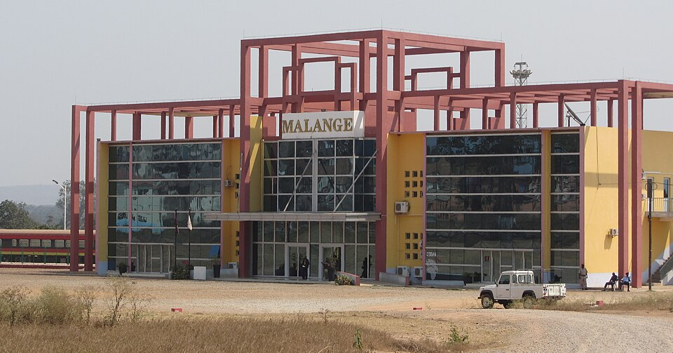

Transporte · Malanje
Estação de Malanje (Caminho de Ferro de Luanda)
Comboios para Luanda.
Fim da linha do Caminho de Ferro de Luanda, que liga a capital a Malanje. Confirme horários e preços com o CFL.
Informação prática
- Horário
- Horários por confirmar com o CFL.
- Morada
- Malanje
- Preço
- Preço por confirmar
Verificado a 12 de outubro de 2026. Fontes: Wikipedia, CFL, OpenStreetMap. Confirme sempre antes de ir.
É o dono deste lugar? Atualize os dados no Tuende: telefone, horário, preços e fotos. É grátis e confirmamos consigo antes de publicar.
Perto daqui
- Churrasqueira Chave d'Ouro · Restaurante · 0,7 km
- Shoprite Malanje · Centro comercial · 1,4 km
- Hotel M'Banza Marimba · Alojamento · 1,5 km
- Palanca Hotel · Alojamento · 1,6 km
Distâncias em linha reta.
Mais lugares em Malanje
- Quedas de Kalandula · Kalandula, Malanje
- Pedras Negras de Pungo Andongo · Pungo Andongo, Malanje
- Parque Nacional da Cangandala · Cangandala, Malanje
- Pousada Calandula · Kalandula, Malanje
Estação de Malanje (Caminho de Ferro de Luanda) — Transport, Malanje
Trains to Luanda.
The end of the Luanda Railway line, which links the capital with Malanje. Check times and fares with CFL.
Prices in Kwanza, opening hours and directions are in the Tuende app (Portuguese and English).